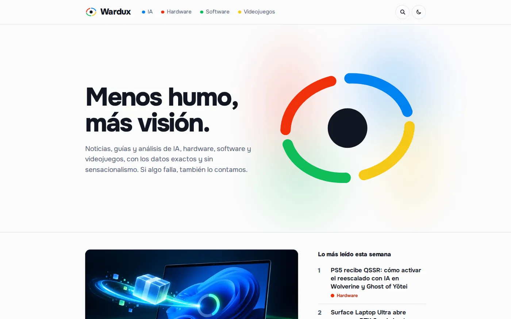

Fernando Martínez
Desarrollador Full Stack que lleva la IA a producción
En mi empresa metí un LLM en el ERP con borrador y aprobación humana. Por mi cuenta dirijo un equipo de agentes de IA con el que he puesto en internet Adivinadle y Wardux.
Marbella, España. En remoto o presencial.
